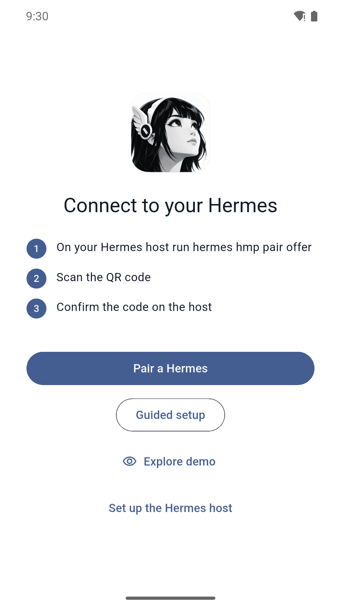
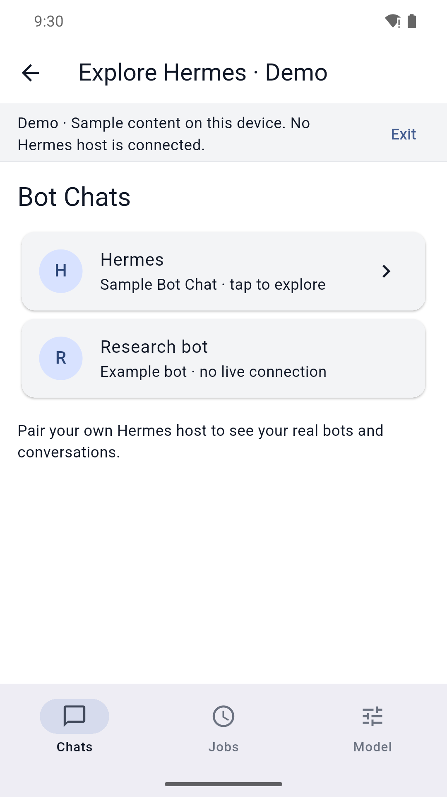
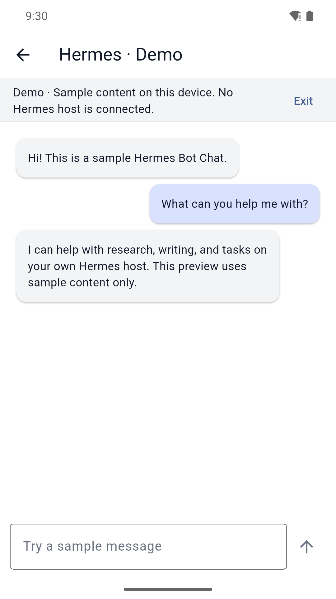
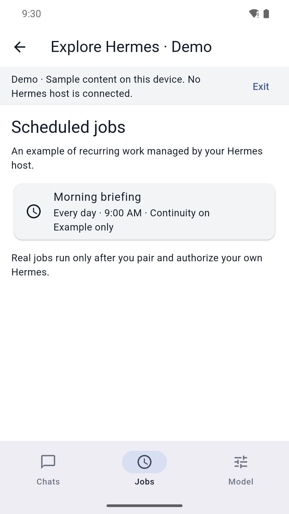
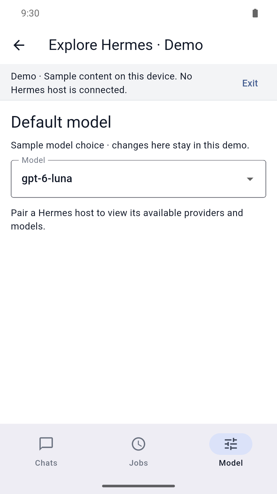

Install HMP Gateway
Install and configure the HMP plugin on the Hermes host.
HMP Gateway repository →Securely connect your phone to your own Hermes Agent. Continue Bot Chats from anywhere and switch between multiple Hermes instances.
Requires Hermes Agent, HMP Gateway, and Tailscale on both devices.
Synthetic demo screenshots. No live host, account, or chat data is shown.





Hermes stays in control. The phone gives you a clean mobile window into the bots you already run.
Read and reply to the same Bot Chat from your phone. Conservative send handling avoids stale or duplicate instructions after a connection drop.
The current beta is intentionally terminal-driven. A guided installer is planned.
Install and configure the HMP plugin on the Hermes host.
HMP Gateway repository →Create a short-lived pairing offer.
hermes hmp pair offer --label "My iPhone"Scan the QR, compare the security code, then confirm in the terminal.
Request the Bot Chats you want in the app, then approve those requests in the Hermes terminal.
These features need upstream Hermes changes before the mobile app can support them cleanly. Read our Nous Research observations →
Some Desktop-parity features need upstream Hermes changes before the mobile app can implement them safely. Read our Nous Research observations →
What ships next, and what needs new Hermes capabilities.